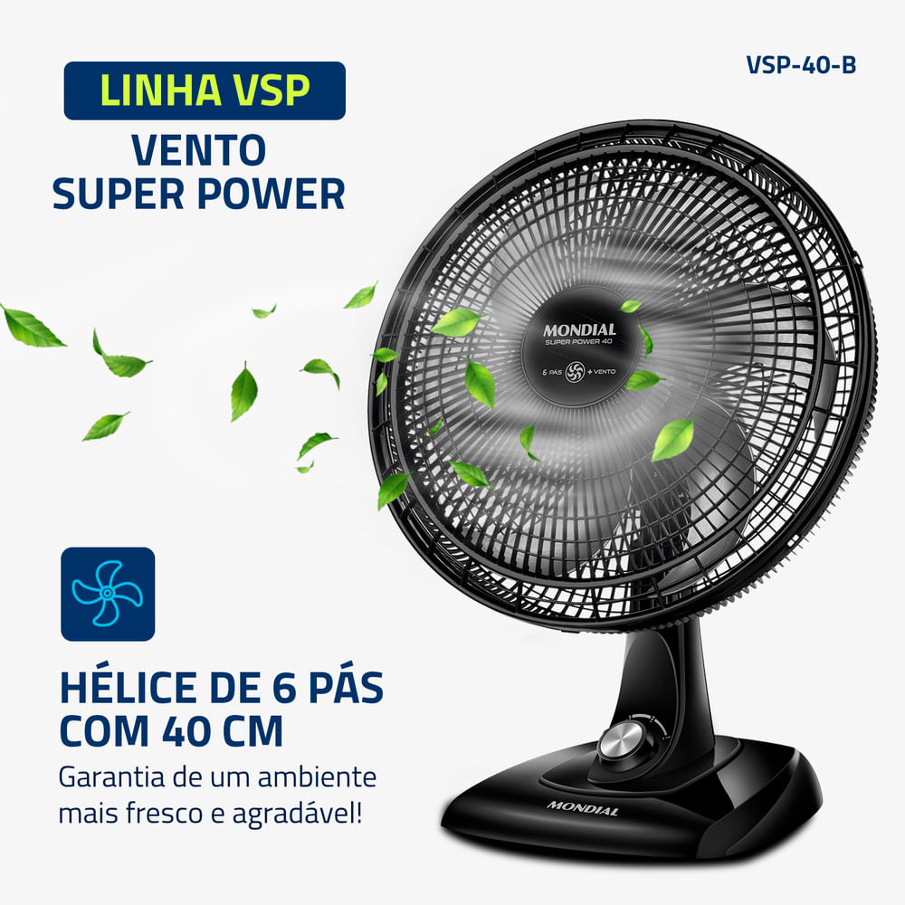
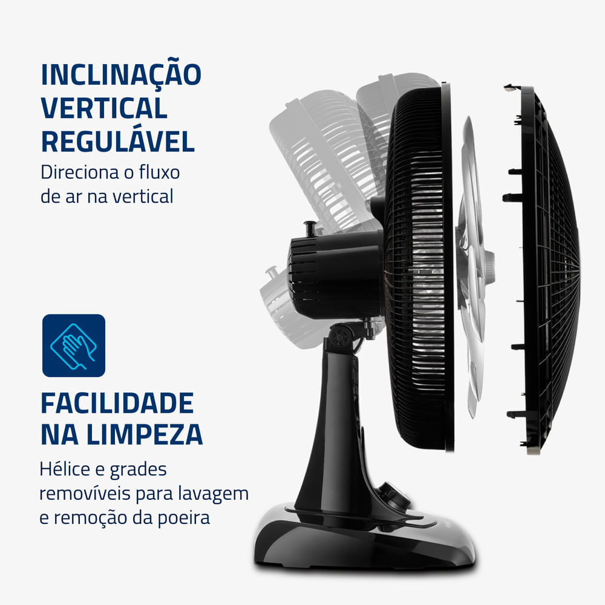
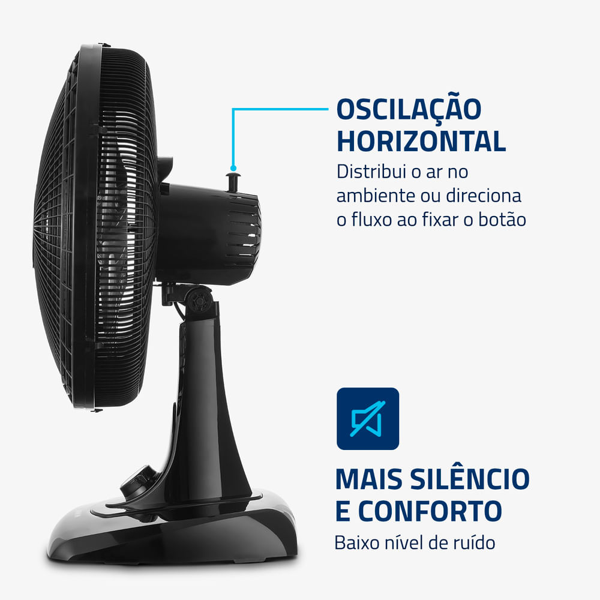
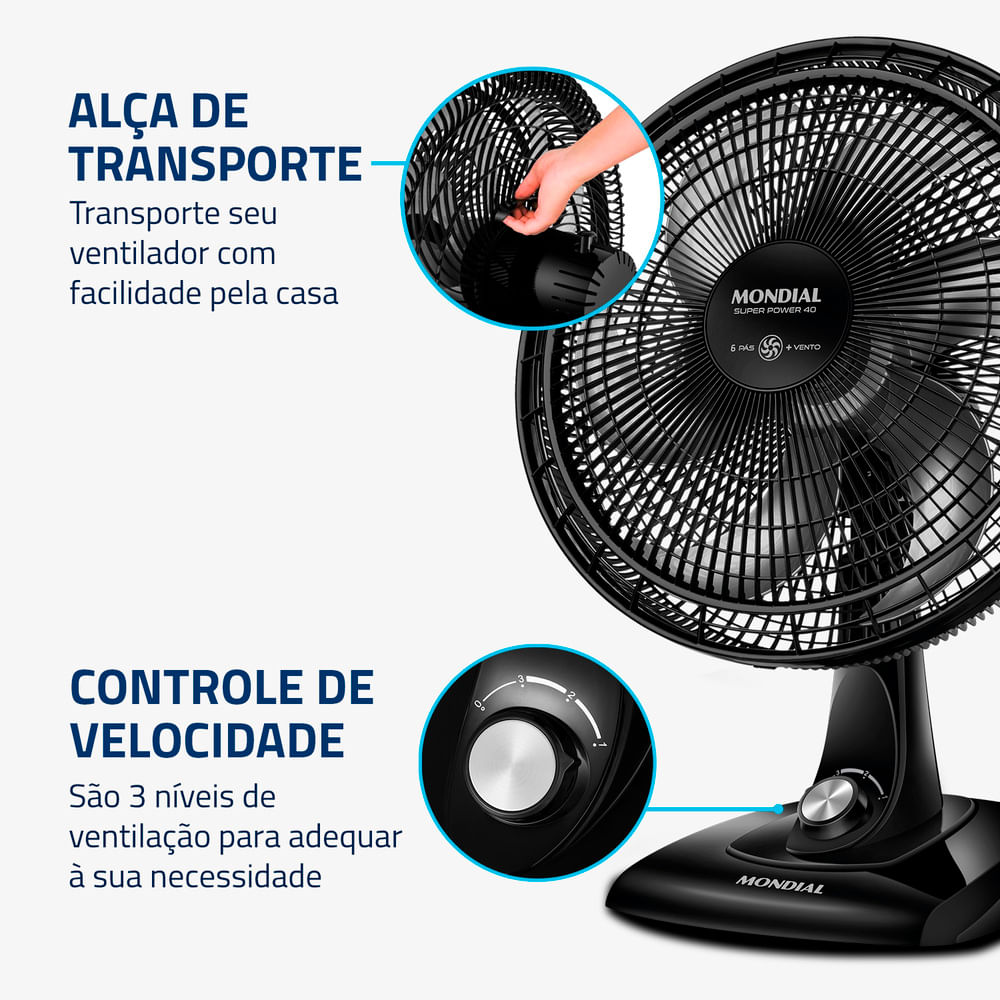
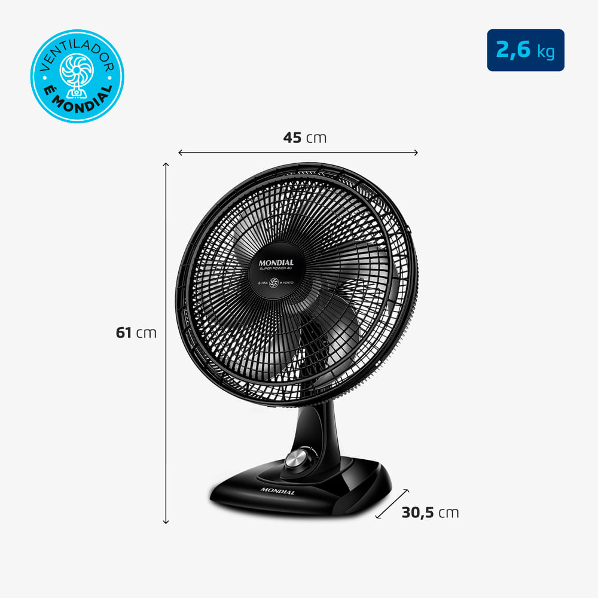

A Find It pesquisa e compara produtos para você. Somos novos por aqui. Comprando pelos nossos links, você ajuda a Find It a crescer e a trazer mais comparações de produtos que valem o preço.
Nota 4,74 de 5 (50.170 avaliações) na página da loja, em 11/11/2026.





Marca
Mondial
Tipo
Ventilador de mesa
Tamanho da hélice
40 cm
Potência
140 W
Voltagem
110V ou 220V (não é bivolt)
Material
Polipropileno (um tipo de plástico)
Cor
Preto e prata
Por que escolhemos
Nota 4,74 de 5, com mais de 50 mil avaliações na página da loja.
A grade da frente sai, então dá para limpar.
Gira para os lados e inclina para cima e para baixo.
Sobre este item
Gira para os lados sozinho. Para mandar o vento num ponto só, trave o botão de cima.
A cabeça inclina para cima e para baixo.
3 velocidades: alta, média e baixa. A Mondial chama de Máxima Turbo, Média Conforto e Mínima Silencioso.
A grade da frente e a hélice saem para lavar.
Alça atrás, para levar de um cômodo para outro.
Depois do uso, o fio fica guardado num encaixe no próprio ventilador.
A base não escorrega na mesa.
Do fabricante
Ventilador de mesa de 40 cm, com 6 pás e 140 W de potência (o gasto de energia). Quem comprou elogia o vento forte, as 3 velocidades bem diferentes e o custo-benefício.